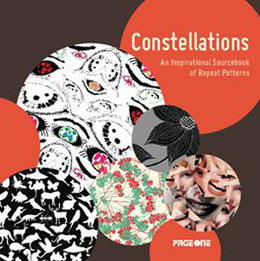

Constellations
Design:An inspirational sourcebook of repeat patterns
Measures:175mm×175mm
Binding:178pp., Hardcover with jacket & DVD
color photographs,
Text in English
Date:October 2009
ISBN:978-981-245-870-4
Subject:Pattern design
Publisher:PageOne (Singapore)
Description:
Repeated patterns are widely applied to manufacturing of decorative home furnishing apparel fabrics, wall and floor covering, gift wrap, and dinnerware. In the most recent years, more and more people are enjoying pretty pattern design as a way to embellish a surface or a background with their use often displaying cutting-edge products or packaging. Sometimes, a proper pattern brings and enhances popular products.
This book contains 4 chapters-abstraction, graphic, collage and texture-the types of today's popular patterns, in which the 243 copyright-free and repeatable patterns are arranged by 6 different styles. Each of the original patterns is reworked 3 times to get a series of inspirational works allowing the reader to compare different effects through colour, proportion, composition and texture.
The DVD provides 243 patterns in high resolution PSD format with layers or vector EPS format, which allow you to modify freely the patterns such as colour, size as well as combination, and make your own repeated patterns as large as you want for printing and reference. The book is an invaluable resource for modern design enthusiast, professional designers and students, helping them choose the proper hues, composition, texture and style to create incredible works.
Price: гд 165 RMB
(Only for Chinese market)
